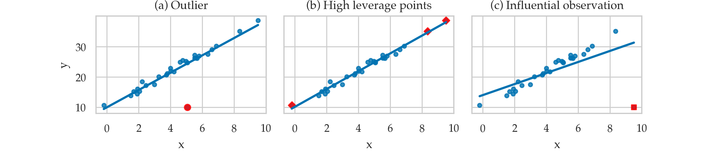

Section 4.3 — Interpreting linear models#
This notebook contains the code examples from Section 4.3 Interpreting linear models from the No Bullshit Guide to Statistics.
Notebook setup#
# Ensure required Python modules are installed
%pip install --quiet numpy scipy seaborn pandas statsmodels ministats
[notice] A new release of pip is available: 26.0 -> 26.0.1
[notice] To update, run: pip install --upgrade pip
Note: you may need to restart the kernel to use updated packages.
# load Python modules
import os
import numpy as np
import pandas as pd
import seaborn as sns
import matplotlib.pyplot as plt
import statsmodels.formula.api as smf
import statsmodels.api as sm
import statsmodels.stats.api as sms
# Figures setup
plt.clf() # needed otherwise `sns.set_theme` doesn't work
sns.set_theme(
context="paper",
style="whitegrid",
palette="colorblind",
rc={"font.family": "serif",
"font.serif": ["Palatino", "DejaVu Serif", "serif"],
"figure.figsize": (5, 3)},
)
%config InlineBackend.figure_format = "retina"
<Figure size 640x480 with 0 Axes>
# Simple float __repr__
if int(np.__version__.split(".")[0]) >= 2:
np.set_printoptions(legacy='1.25')
# set random seed for repeatability
np.random.seed(42)
# Download datasets/ directory if necessary
from ministats import ensure_datasets
ensure_datasets()
datasets/ directory already exists.
Introduction#
# load the dataset
doctors = pd.read_csv("datasets/doctors.csv")
n = doctors.shape[0]
# fit the model
formula = "score ~ 1 + alc + weed + exrc"
lm2 = smf.ols(formula, data=doctors).fit()
# model degrees of freedom (number of predictors)
p = lm2.df_model
# display the summary table
lm2.summary()
| Dep. Variable: | score | R-squared: | 0.842 |
|---|---|---|---|
| Model: | OLS | Adj. R-squared: | 0.839 |
| Method: | Least Squares | F-statistic: | 270.3 |
| Date: | Thu, 12 Feb 2026 | Prob (F-statistic): | 1.05e-60 |
| Time: | 17:35:44 | Log-Likelihood: | -547.63 |
| No. Observations: | 156 | AIC: | 1103. |
| Df Residuals: | 152 | BIC: | 1115. |
| Df Model: | 3 | ||
| Covariance Type: | nonrobust |
| coef | std err | t | P>|t| | [0.025 | 0.975] | |
|---|---|---|---|---|---|---|
| Intercept | 60.4529 | 1.289 | 46.885 | 0.000 | 57.905 | 63.000 |
| alc | -1.8001 | 0.070 | -25.726 | 0.000 | -1.938 | -1.662 |
| weed | -1.0216 | 0.476 | -2.145 | 0.034 | -1.962 | -0.081 |
| exrc | 1.7683 | 0.138 | 12.809 | 0.000 | 1.496 | 2.041 |
| Omnibus: | 1.140 | Durbin-Watson: | 1.828 |
|---|---|---|---|
| Prob(Omnibus): | 0.565 | Jarque-Bera (JB): | 0.900 |
| Skew: | 0.182 | Prob(JB): | 0.638 |
| Kurtosis: | 3.075 | Cond. No. | 31.2 |
Notes:
[1] Standard Errors assume that the covariance matrix of the errors is correctly specified.
Model fit metrics#
Coefficient of determination#
lm2.rsquared
0.8421649167873537
# ALT.
1 - lm2.ssr/lm2.centered_tss
0.8421649167873537
Adjusted coefficient of determination#
lm2.rsquared_adj
0.8390497506713147
# ALT.
1 - (lm2.ssr/(n-p-1)) / (lm2.centered_tss/(n-1))
0.8390497506713146
F-statistic and associated p-value#
lm2.fvalue, lm2.f_pvalue
(270.34350189265825, 1.0512133413867044e-60)
Log-likelihood#
lm2.llf
-547.6259042117637
# ALT.
from scipy.stats import norm
sigmahat = np.sqrt(lm2.scale)
np.sum(np.log(norm.pdf(lm2.resid,scale=sigmahat)))
# Q: Why not exactly the same as lm2.llf?
-547.651992151218
# How lm2.llf is computed:
SSR = np.sum(lm2.resid**2)
nobs2 = n/2.0
llf = -np.log(SSR)*nobs2 # concentrated likelihood
llf -= ( 1+np.log(np.pi/nobs2) )*nobs2 # with likelihood constant
llf
-547.6259042117637
Information criteria#
lm2.aic, lm2.bic
(1103.2518084235273, 1115.4512324525256)
# ALT.
2*(p+1) - 2*lm2.llf, np.log(n)*(p+1) - 2*lm2.llf
(1103.2518084235273, 1115.4512324525256)
Other model-fit metrics#
The mean squared error (MSE)
from statsmodels.tools.eval_measures import mse
scores = doctors["score"]
scorehats = lm2.fittedvalues
mse(scores,scorehats), lm2.ssr/n
(65.56013803717558, 65.56013803717559)
Parameter estimates#
# estimated parameters
lm2.params
Intercept 60.452901
alc -1.800101
weed -1.021552
exrc 1.768289
dtype: float64
# estimated sigma (std. of error term)
sigmahat = np.sqrt(lm2.scale)
sigmahat
8.202768119825624
# ALT.
np.sqrt(lm2.ssr/(n-p-1))
8.202768119825624
Confidence intervals for model parameters#
# standard errors
lm2.bse
Intercept 1.289380
alc 0.069973
weed 0.476166
exrc 0.138056
dtype: float64
lm2.conf_int(alpha=0.05)
| 0 | 1 | |
|---|---|---|
| Intercept | 57.905480 | 63.000321 |
| alc | -1.938347 | -1.661856 |
| weed | -1.962309 | -0.080794 |
| exrc | 1.495533 | 2.041044 |
Hypothesis testing for linear models#
T-tests for individual parameters#
Hypothesis testing for slope coefficient
Is there a non-zero slope coefficient?
Example: t-test for the variable weed#
Null hypothesis \(H_0\):
weedhas no effect onscore, which is equivalent to \(\beta_{\texttt{weed}} = 0\):\[ H_0: \quad S \;\sim\; \mathcal{N}( {\color{red} \beta_0 + \beta_{\texttt{alc}}\!\cdot\!\textrm{alc} + \beta_{\texttt{exrc}}\!\cdot\!\textrm{exrc} }, \ \sigma) \qquad \qquad \]Alternative hypothesis \(H_A\):
weedhas an effect onscore, and the slope is not zero, \(\beta_{\texttt{weed}} \neq 0\):\[ H_A: \quad S \;\sim\; \mathcal{N}\left( {\color{blue} \beta_0 + \beta_{\texttt{alc}}\!\cdot\!\textrm{alc} + \beta_{\texttt{weed}}\!\cdot\!\textrm{weed} + \beta_{\texttt{exrc}}\!\cdot\!\textrm{exrc} }, \ \sigma \right) \]
lm2.tvalues["weed"], lm2.pvalues["weed"], n-p-1
(-2.1453705454368537, 0.033511561813423796, 152.0)
Calculate the \(t\) statistic:
obst_weed = (lm2.params["weed"] - 0) / lm2.bse["weed"]
obst_weed # = lm2.tvalues["weed"]
-2.1453705454368537
Calculate the associated \(p\)-value
from scipy.stats import t as tdist
pleft = tdist(df=n-p-1).cdf(obst_weed)
pright = 1 - tdist(df=lm2.df_resid).cdf(obst_weed)
pvalue_weed = 2 * min(pleft, pright)
pvalue_weed # = lm2.pvalues["weed"]
0.033511561813423796
lm2.tvalues
Intercept 46.885245
alc -25.725654
weed -2.145371
exrc 12.808529
dtype: float64
lm2.df_resid, n-p-1
(152.0, 152.0)
lm2.pvalues
Intercept 2.756807e-92
alc 2.985013e-57
weed 3.351156e-02
exrc 6.136296e-26
dtype: float64
F-test for the overall model#
lm2.fvalue
270.34350189265825
# ALT.
F = lm2.mse_model / lm2.mse_resid
F
270.34350189265825
lm2.f_pvalue
1.0512133413867044e-60
# ALT.
from scipy.stats import f as fdist
fdist(dfn=p, dfd=n-p-1).sf(F)
1.0512133413867044e-60
F-test for a submodel#
formula2nw = "score ~ 1 + alc + exrc"
lm2_noweed = smf.ols(formula2nw, data=doctors).fit()
F_noweed, p_noweed, _ = lm2.compare_f_test(lm2_noweed)
F_noweed, p_noweed
(4.602614777227984, 0.03351156181342448)
The F-statistic is the same as the t-statistic#
F_noweed, obst_weed**2, lm2.tvalues["weed"]**2
(4.602614777227984, 4.602614777228023, 4.602614777228023)
p_noweed, pvalue_weed, lm2.pvalues["weed"]
(0.03351156181342448, 0.033511561813423796, 0.033511561813423796)
Assumptions checks and diagnostics#
Are the assumptions for the linear model satisfied?
Residuals plots#
from ministats import plot_resid
plot_resid(lm2, lowess=True);
{kind=link}
from ministats import plot_resid
plot_resid(lm2, pred="alc", lowess=True);
{kind=link}
Linearity checks#
Look at residuals plots.
Independence checks#
Look at residuals plots.
Normality checks#
Look at residuals plots…
QQ plot inspection#
from statsmodels.graphics.api import qqplot
qqplot(lm2.resid, line="s");
{kind=link}
# BONUS
ax = sns.histplot(lm2.resid)
ax.set_xlim([-27,27]);
{kind=link}
Skew and kurtosis#
from scipy.stats import skew
from scipy.stats import kurtosis
skew(lm2.resid), kurtosis(lm2.resid, fisher=False)
(0.18224568453683496, 3.0747952385562636)
Homoscedasticity checks#
The scale-location plot allows us to see if pattern in the variance of the residuals exists.
from ministats import plot_scaleloc
plot_scaleloc(lm2);
{kind=link}
# ALT. Generate the scale-location plot from scratch
# 1. Compute the square root of the standardized residuals
scorehats = lm2.fittedvalues
std_resids = lm2.resid / np.sqrt(lm2.scale)
sqrt_std_resids = np.sqrt(np.abs(std_resids))
# 2. Generate the scatter plot
ax = sns.scatterplot(x=scorehats, y=sqrt_std_resids)
# 3. Add the LOWESS curve
from statsmodels.nonparametric.smoothers_lowess import lowess
xgrid, ylowess = lowess(sqrt_std_resids, scorehats).T
sns.lineplot(x=xgrid, y=ylowess, ax=ax)
# 4. Add descriptive labels
ax.set_ylabel(r"$\sqrt{|standardized\ residuals|}$")
ax.set_xlabel("fitted values");
{kind=link}
Collinearity checks#
Check the correlation matrix#
corrM = doctors[["alc", "weed", "exrc"]].corr()
corrM.round(4)
| alc | weed | exrc | |
|---|---|---|---|
| alc | 1.0000 | 0.0422 | 0.0336 |
| weed | 0.0422 | 1.0000 | 0.0952 |
| exrc | 0.0336 | 0.0952 | 1.0000 |
# # BONUS 1 (not covered anywhere earlier in the book)
# sns.heatmap(corrM, annot=True, fmt='.2f', cmap="Grays");
# # BONUS 2 (not covered anywhere earlier in the book)
# sns.pairplot(doctors[["alc", "weed", "exrc"]]);
Condition number#
lm2.condition_number
31.229721453770164
# ALT. (compute from scratch)
#######################################################
X = sm.add_constant(doctors[["alc","weed","exrc"]])
eigvals = np.linalg.eigvals(X.T @ X)
lam_max, lam_min = np.max(eigvals), np.min(eigvals)
np.sqrt(lam_max/lam_min)
31.229721453770264
Variance inflation factor#
from ministats import calc_lm_vif
calc_lm_vif(lm2, "alc"), calc_lm_vif(lm2, "weed"), calc_lm_vif(lm2, "exrc")
(1.0026692156304757, 1.010703145007322, 1.010048809433661)
# ALT. using variance_inflation_factor from statsmodels
from statsmodels.stats.outliers_influence \
import variance_inflation_factor as statsmodels_vif
X = sm.add_constant(doctors[["alc","weed","exrc"]])
statsmodels_vif(X, 1) # variation inflation factor of "alc" in lm2
1.0026692156304757
Perfect multicollinearity example#
doctorscol = doctors.copy()
doctorscol["alc2"] = doctors["alc"]
formula2col = "score ~ 1 + alc + alc2 + weed + exrc"
lm2col = smf.ols(formula2col, data=doctorscol).fit()
lm2col.params
Intercept 60.452901
alc -0.900051
alc2 -0.900051
weed -1.021552
exrc 1.768289
dtype: float64
calc_lm_vif(lm2col, "alc")
/opt/hostedtoolcache/Python/3.10.19/x64/lib/python3.10/site-packages/ministats/linear_models.py:17: RuntimeWarning: divide by zero encountered in scalar divide
vif = 1. / (1. - r_squared_i)
inf
Outliers and influential observations#
TODO: definitions

Leverage and influence metrics#
TODO: add definitions of quantities in point form
Leverage plots#
from statsmodels.graphics.api import plot_leverage_resid2
plot_leverage_resid2(lm2);
{kind=link}
Influence plots#
from statsmodels.graphics.api import influence_plot
influence_plot(lm2, criterion="cooks", size=4);
{kind=link}
Model predictions#
Prediction on the dataset#
lm2.fittedvalues
0 55.345142
1 32.408174
2 71.030821
3 56.789073
4 57.514154
...
151 58.867105
152 43.049719
153 57.728460
154 69.617361
155 78.135788
Length: 156, dtype: float64
Prediction for new data#
newdoc = {"alc":3, "weed":1, "exrc":8}
lm2.predict(newdoc)
0 68.177355
dtype: float64
newdoc_score_pred = lm2.get_prediction(newdoc)
newdoc_score_pred.conf_int(obs=True, alpha=0.1)
array([[54.50324518, 81.85146489]])
In-sample prediction accuracy#
# Compute the in-sample mean squared error (MSE)
scores = doctors['score']
scorehats = lm2.fittedvalues
mse = np.mean( (scores - scorehats)**2 )
mse
65.56013803717558
# ALT.
lm2.ssr/n
65.56013803717559
# # ALT2.
# from statsmodels.tools.eval_measures import mse
# mse(scores,scorehats)
Out-of-sample prediction accuracy#
TODO: explain
Leave-one-out cross-validation#
loo_preds = np.zeros(n)
for i in range(n):
doctors_no_i = doctors.drop(index=i)
lm2_no_i = smf.ols(formula,data=doctors_no_i).fit()
predictors_i = dict(doctors.loc[i,:])
pred_i = lm2_no_i.predict(predictors_i)[0]
loo_preds[i] = pred_i
# Calculate the out-of-sample mean squared error
mse_loo = np.mean( (doctors['score'] - loo_preds)**2 )
mse_loo
69.20054514710951
Compare with the in-sample MSE of the model which is lower.
lm2.ssr/n
65.56013803717559
Towards machine learning#
The out-of-sample prediction accuracy is a common metric used in machine learning (ML) tasks.
Explanations#
Adjusted \(R^2\)#
TODO: show formula
# TODO
Calculating standard error of parameters (optional)#
lm2.bse
Intercept 1.289380
alc 0.069973
weed 0.476166
exrc 0.138056
dtype: float64
# construct the design matrix for the model
X = sm.add_constant(doctors[["alc","weed","exrc"]])
# calculate the diagonal of the inverse-covariance matrix
inv_covs = np.diag(np.linalg.inv(X.T.dot(X)))
sigmahat*np.sqrt(inv_covs)
array([1.28938008, 0.06997301, 0.4761656 , 0.13805557])
# these lead to approx. same result because predictors are not correlated
# but the correct formula is to use the inv. covariance matrix as above.
sum_alc_dev2 = np.sum((doctors["alc"] - doctors["alc"].mean())**2)
sum_weed_dev2 = np.sum((doctors["weed"] - doctors["weed"].mean())**2)
sum_exrc_dev2 = np.sum((doctors["exrc"] - doctors["exrc"].mean())**2)
se_b_alc = sigmahat / np.sqrt(sum_alc_dev2)
se_b_weed = sigmahat / np.sqrt(sum_weed_dev2)
se_b_exrc = sigmahat / np.sqrt(sum_exrc_dev2)
se_b_alc, se_b_weed, se_b_exrc
(0.06987980522527788, 0.47363764322385443, 0.13736710473639846)
Metrics for influential observations#
Leverage score#
infl = lm2.get_influence()
infl.hat_matrix_diag[0:5]
array([0.09502413, 0.0129673 , 0.01709783, 0.01465484, 0.00981632])
Studentized residuals#
infl.resid_studentized_external[0:5]
array([ 0.98085317, -2.03409243, -1.61072775, -0.21903275, -1.29094028])
Cook’s distance#
infl.cooks_distance[0][0:5]
array([0.02526116, 0.01331454, 0.01116562, 0.00017951, 0.0041123 ])
DFFITS diagnostic#
infl.dffits[0][0:5]
array([ 0.31783554, -0.23314692, -0.21244055, -0.02671194, -0.12853536])
Calculating leverage and influence metrics using statsmodels#
infl = lm2.get_influence()
infl_df = infl.summary_frame()
# list(infl_df.columns)
cols = ["student_resid", "hat_diag", "cooks_d", "dffits"]
infl_df[cols].round(3).head(5)
| student_resid | hat_diag | cooks_d | dffits | |
|---|---|---|---|---|
| 0 | 0.981 | 0.095 | 0.025 | 0.318 |
| 1 | -2.034 | 0.013 | 0.013 | -0.233 |
| 2 | -1.611 | 0.017 | 0.011 | -0.212 |
| 3 | -0.219 | 0.015 | 0.000 | -0.027 |
| 4 | -1.291 | 0.010 | 0.004 | -0.129 |
Hypothesis tests for checking linear model assumptions#
lm2.diagn
{'jb': 0.8999138579592632,
'jbpv': 0.6376556155083237,
'skew': 0.18224568453683496,
'kurtosis': 3.0747952385562636,
'omni': 1.1403999852814017,
'omnipv': 0.5654123490825906,
'condno': 31.229721453770164,
'mineigval': 40.14996367643264}
Hypothesis test for linearity#
sms.linear_harvey_collier(lm2)
TtestResult(statistic=1.4317316989777105, pvalue=0.15427366179829397, df=152)
Normality tests#
from statsmodels.stats.stattools import omni_normtest
omni, omnipv = omni_normtest(lm2.resid)
omni, omnipv
(1.1403999852814017, 0.5654123490825906)
from statsmodels.stats.stattools import jarque_bera
jb, jbpv, skew, kurtosis = jarque_bera(lm2.resid)
jb, jbpv, skew, kurtosis
(0.8999138579592632,
0.6376556155083237,
0.18224568453683496,
3.0747952385562636)
Independence test (autocorrelation)#
from statsmodels.stats.stattools import durbin_watson
durbin_watson(lm2.resid)
1.8284830211766727
Homoskedasticity tests#
Breusch-Pagan#
https://en.wikipedia.org/wiki/Breusch-Pagan_test
lm, p_lm, _, _ = sms.het_breuschpagan(lm2.resid, lm2.model.exog)
lm, p_lm
(6.254809752854315, 0.09985027888796541)
Goldfeld-Quandt test#
https://en.wikipedia.org/wiki/Goldfeld-Quandt_test
# sort by score
idxs = doctors.sort_values("alc").index
# sort by scorehats
idxs = np.argsort(lm2.fittedvalues)
X = lm2.model.exog[idxs,:]
resid = lm2.resid[idxs]
# run the test
F, p_F, _ = sms.het_goldfeldquandt(resid, X, idx=1)
F, p_F
(1.5270095367354277, 0.03531055667345376)
Discussion#
Maximum likelihood estimate#
from scipy.optimize import minimize
from scipy.stats import norm
n = len(doctors)
preds = doctors[["alc", "weed", "exrc"]]
scores = doctors["score"]
def neg_log_likelihood(betas):
scorehats = betas[0] + (betas[1:]*preds).sum(1)
residuals = scores - scorehats
SSR = np.sum(residuals**2)
sigmahat_MLE = np.sqrt(SSR/n)
likelihoods = norm.pdf(residuals, scale=sigmahat_MLE)
log_likelihood = np.sum(np.log(likelihoods))
return -log_likelihood
betas = minimize(neg_log_likelihood, x0=[0,0,0,0]).x
betas
array([60.45289916, -1.80010128, -1.02155177, 1.76828883])
# the results are the same as `lm2.params`
lm2.params.values
array([60.45290059, -1.80010132, -1.02155166, 1.76828876])
# calculate the maximum log-likelihood achieved
-neg_log_likelihood(betas), lm2.llf
(-547.6259042117645, -547.6259042117637)
Regularization#
doctors[["alc", "weed", "exrc"]].std()
alc 9.428506
weed 1.391068
exrc 4.796361
dtype: float64
# TRUE
# alc = - 1.8
# weed = - 0.5
# exrc = + 1.9
# FITTED
lm2.params
Intercept 60.452901
alc -1.800101
weed -1.021552
exrc 1.768289
dtype: float64
L1 regularization (LASSO)#
Set alpha option to the desired value \(\alpha_1\) and L1_wt = 1,
which means \(100\%\) L1 regularization.
lm2_L1reg = smf.ols(formula, data=doctors) \
.fit_regularized(alpha=0.3, L1_wt=1.0)
lm2_L1reg.params
Intercept 58.930367
alc -1.763306
weed 0.000000
exrc 1.795228
dtype: float64
L2 regularization (ridge)#
Set alpha option to the desired value \(\alpha_2\) and L1_wt = 0,
which means \(0\%\) L1 regularization and \(100\%\) L2 regularization.
lm2_L2reg = smf.ols(formula, data=doctors) \
.fit_regularized(alpha=0.05, L1_wt=0.0001)
lm2_L2reg.params
Intercept 50.694960
alc -1.472536
weed -0.457425
exrc 2.323386
dtype: float64
Statsmodels diagnostics plots (BONUS TOPIC)#
TODO: import explanations from .tex
Plot fit against one regressor#
see https://www.statsmodels.org/stable/generated/statsmodels.graphics.regressionplots.plot_fit.html
from statsmodels.graphics.api import plot_fit
with plt.rc_context({"figure.figsize":(9,2.6)}):
fig, (ax1,ax2,ax3) = plt.subplots(1,3, sharey=True)
plot_fit(lm2, "alc", ax=ax1)
plot_fit(lm2, "weed", ax=ax2)
plot_fit(lm2, "exrc", ax=ax3)
ax2.get_legend().remove()
ax3.get_legend().remove()
{kind=link}
Partial regression plot#
from statsmodels.graphics.api import plot_partregress
with plt.rc_context({"figure.figsize":(9,2.6)}):
fig, (ax1,ax2,ax3) = plt.subplots(1,3, sharey=True)
plot_partregress("score", "alc", exog_others=[], data=doctors, obs_labels=False, ax=ax1)
plot_partregress("score", "weed", exog_others=[], data=doctors, obs_labels=False, ax=ax2)
plot_partregress("score", "exrc", exog_others=[], data=doctors, obs_labels=False, ax=ax3)
{kind=link}
CCPR plot#
component and component-plus-residual
see https://www.statsmodels.org/stable/generated/statsmodels.graphics.regressionplots.plot_ccpr.html
from statsmodels.graphics.api import plot_ccpr
with plt.rc_context({"figure.figsize":(9,2.6)}):
fig, (ax1,ax2,ax3) = plt.subplots(1,3)
fig.subplots_adjust(wspace=0.5)
plot_ccpr(lm2, "alc", ax=ax1)
ax1.set_title("")
ax1.set_ylabel(r"$\mathrm{alc} \cdot \widehat{\beta}_{\mathrm{alc}} \; + \; \mathbf{r}$")
plot_ccpr(lm2, "weed", ax=ax2)
ax2.set_title("")
ax2.set_ylabel(r"$\mathrm{weed} \cdot \widehat{\beta}_{\mathrm{weed}} \; + \; \mathbf{r}$", labelpad=-3)
plot_ccpr(lm2, "exrc", ax=ax3)
ax3.set_title("")
ax3.set_ylabel(r"$\mathrm{exrc} \cdot \widehat{\beta}_{\mathrm{exrc}} \; + \; \mathbf{r}$", labelpad=-3)
{kind=link}
All-in-on convenience method#
from statsmodels.graphics.api import plot_regress_exog
with plt.rc_context({"figure.figsize":(9,6)}):
plot_regress_exog(lm2, "alc")
{kind=link}
Exercises#
E4.LOGNORM Non-normal error term#
from scipy.stats import uniform, lognorm
np.random.seed(42)
xs = uniform(0,10).rvs(100)
ys = 2*xs + lognorm(1).rvs(100)
df = pd.DataFrame({"x":xs, "y":ys})
lm = smf.ols("y ~ x", data=df).fit()
qqplot(lm.resid, line="s");
{kind=link}
# sns.scatterplot(x=xs, y=lm.resid);
# from ministats import plot_lm_scale_loc
# plot_lm_scale_loc(lm);
E4.DEP Dependent error term#
E4.NL Nonlinear relationship#
from scipy.stats import uniform, lognorm
np.random.seed(42)
xs = uniform(0,10).rvs(100)
ys = 2*xs + xs**2 + norm(0,1).rvs(100)
df = pd.DataFrame({"x":xs, "y":ys})
lm = smf.ols("y ~ 1 + x", data=df).fit()
lm.params
Intercept -14.684585
x 11.688188
dtype: float64
from ministats import plot_reg
plot_reg(lm);
{kind=link}
plot_resid(lm, lowess=True);
{kind=link}
qqplot(lm.resid, line="s");
{kind=link}
E4.H Heteroskedasticity#
from scipy.stats import uniform, norm
np.random.seed(43)
xs = np.sort(uniform(0,10).rvs(100))
sigmas = np.linspace(1,20,100)
ys = 2*xs + norm(loc=0,scale=sigmas).rvs(100)
df = pd.DataFrame({"x":xs, "y":ys})
lm = smf.ols("y ~ x", data=df).fit()
from ministats import plot_scaleloc
plot_scaleloc(lm);
{kind=link}
E4.v Collinearity#
from scipy.stats import uniform, norm
np.random.seed(45)
x1s = uniform(0,10).rvs(100)
alpha = 0.8
x2s = alpha*x1s + (1-alpha)*uniform(0,10).rvs(100)
ys = 2*x1s + 3*x2s + norm(0,1).rvs(100)
df = pd.DataFrame({"x1":x1s, "x2":x2s, "y":ys})
lm = smf.ols("y ~ x1 + x2", data=df).fit()
lm.params, lm.bse
(Intercept 0.220927
x1 1.985774
x2 3.006225
dtype: float64,
Intercept 0.253988
x1 0.137253
x2 0.167492
dtype: float64)
lm.condition_number
24.291898486251146
calc_lm_vif(lm, "x1"), calc_lm_vif(lm, "x2")
(17.17244980334442, 17.17244980334442)
Links#
More details about model checking https://ethanweed.github.io/pythonbook/05.04-regression.html#model-checking
Statistical Modeling: The Two Cultures paper that explains the importance of out-of-sample predictions for statistical modelling.
https://projecteuclid.org/journals/statistical-science/volume-16/issue-3/Statistical-Modeling–The-Two-Cultures-with-comments-and-a/10.1214/ss/1009213726.full
CUT MATERIAL#
Example dataset#
TODO: convert to exercise in Sec 4.1
mtcars = sm.datasets.get_rdataset("mtcars", "datasets").data
mtcars
lmcars = smf.ols("mpg ~ hp", data=mtcars).fit()
sns.scatterplot(x=mtcars["hp"], y=mtcars["mpg"])
sns.lineplot(x=mtcars["hp"], y=lmcars.fittedvalues);
{kind=link}
Compute the variance/covariance matrix#
lm2.cov_params()
# == lm2.scale * np.linalg.inv(X.T @ X)
# where X = sm.add_constant(doctors[["alc","weed","exrc"]])
| Intercept | alc | weed | exrc | |
|---|---|---|---|---|
| Intercept | 1.662501 | -0.055601 | -0.093711 | -0.095403 |
| alc | -0.055601 | 0.004896 | -0.001305 | -0.000288 |
| weed | -0.093711 | -0.001305 | 0.226734 | -0.006177 |
| exrc | -0.095403 | -0.000288 | -0.006177 | 0.019059 |